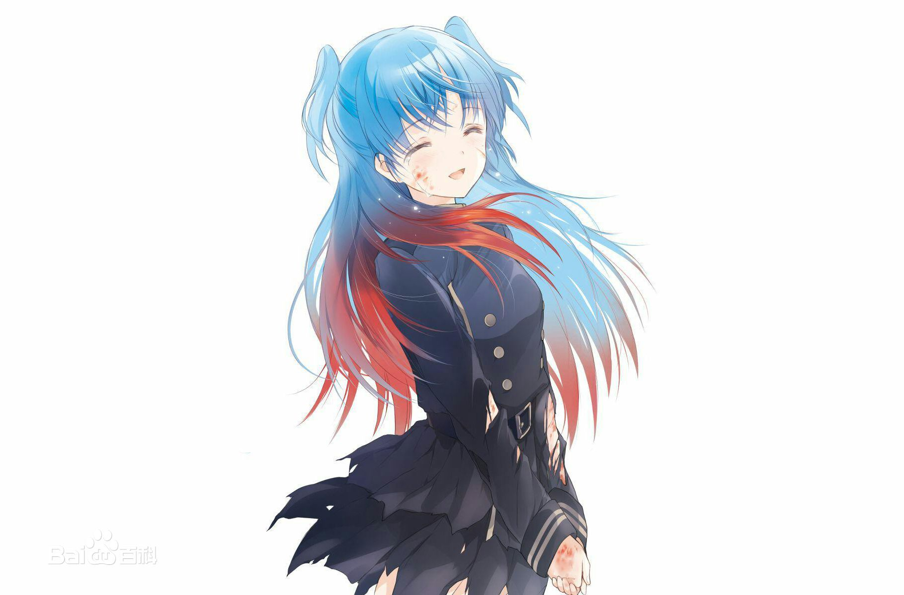
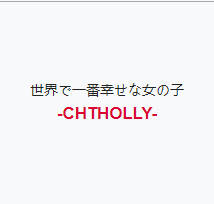

終末なにしてますか？忙しいですか？救ってもらっていいですか？
本作第一卷刚出版之时，虽然在读者间拥有很高的评价，但初期销量十分惨淡。这部曾经两卷就面临腰斩的轻小说，依靠着优异的口碑以及本作粉丝的大力宣传，让前两卷的销量上涨，在网络上蔚为话题的末日系作品。使得文库方面同意继续出版，终于将本作从腰斩末路上救回，成功连载完5卷。还不仅如此，凭借题材优势，本作在角川Sneaker文库众多轻小说中脱颖而出，最终实现了轻小说梦寐以求的动画化，走出了一条堪称奇迹的道路。


从原作开始，珂朵莉的理念就是“普通女孩”，不会掌握时机，也抓不住要领。但这也是她的风格，固执地追求自尊心。这样认真的女孩子，遇见威廉那样的男人会发生什么？我一边这样想，一边写着。——枯野瑛

珂朵莉:“我曾经发誓要永远和他在一起,能够如此发誓，让我无比幸福。”
威廉:“我曾经发誓要永远和她在一起,能够如此发誓，让我心获安详。”
珂朵莉:“我曾经认为自己喜欢这个人。”威廉:“我曾经觉得自己非常珍视她。
珂朵莉:“能有如此感受，让我无比幸福。威廉:“能够如此感受，让我无比喜悦。”
威廉:“我曾经发誓要永远和她在一起,能够如此发誓，让我心获安详。”
珂朵莉:“我曾经认为自己喜欢这个人。”威廉:“我曾经觉得自己非常珍视她。
珂朵莉:“能有如此感受，让我无比幸福。威廉:“能够如此感受，让我无比喜悦。”
珂朵莉:“他曾经对我说，我一定让你幸福。”威廉:“我曾经对她说，我一-定会让你幸福。 ”珂朵莉:“能听到他那样说，让我无比幸福。”威廉:“能够对她那么说，让我心获满足。珂朵莉:“那个人，分了这么多的幸福给我。
威廉:“我从她那得到了这么对的东西，可是，我却.”
珂朵莉:“所以，我敢肯定，现在的我...不管别人怎么说，都一定是世界上最幸福的女孩。”
威廉:“我从她那得到了这么对的东西，可是，我却.”
珂朵莉:“所以，我敢肯定，现在的我...不管别人怎么说，都一定是世界上最幸福的女孩。”

分享
特别提醒：若将1~12话的标题按顺序组合起来，可以组成这样一段话：
在太阳西斜的这个世界里，置
身天上之森。等这场战争结束之后，不归之人与望
眼欲穿的众人， 人人本着正义之名，长存不灭的过去、 逐渐消逝的未来。我回来了，纵使日薄西山，
眼欲穿的众人， 人人本着正义之名，长存不灭的过去、 逐渐消逝的未来。我回来了，纵使日薄西山，
珂
朵
莉
看不到未来，此时此刻的光辉，盼君勿忘。————
世界上最幸福的女孩。